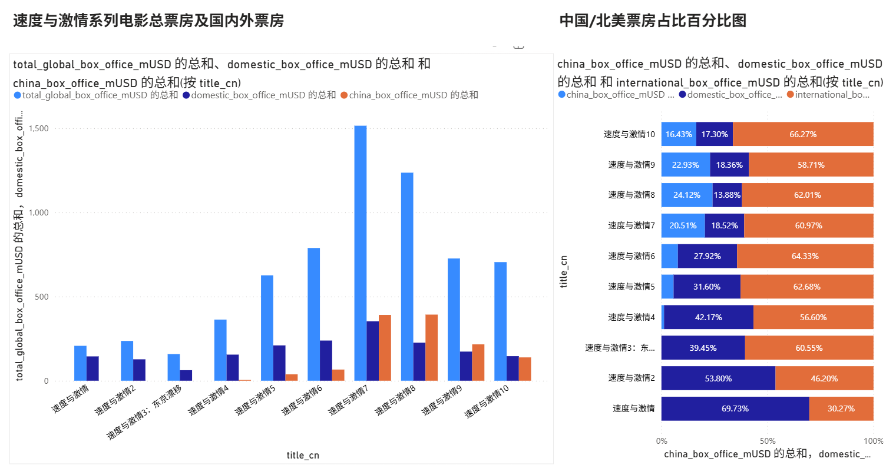
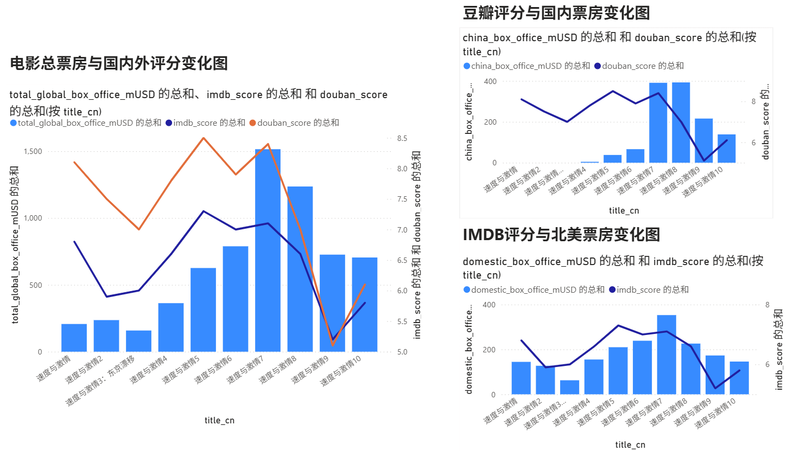
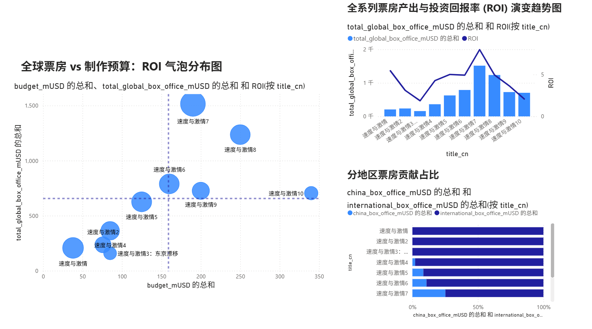
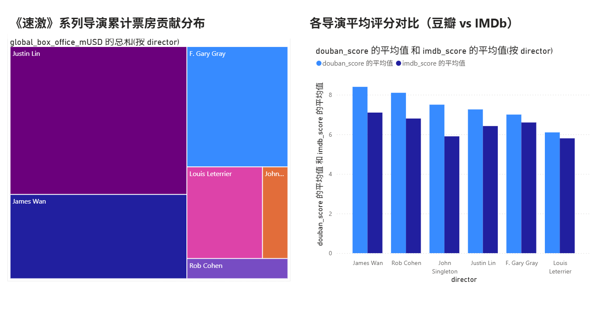
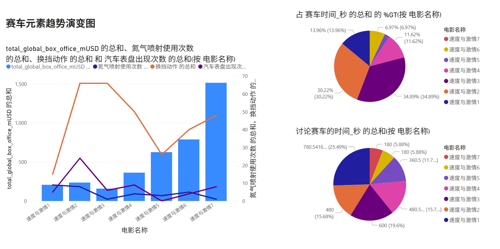
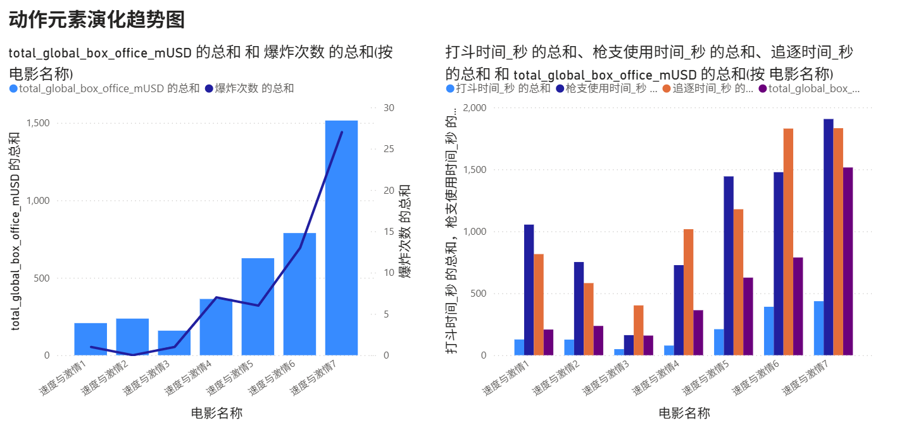
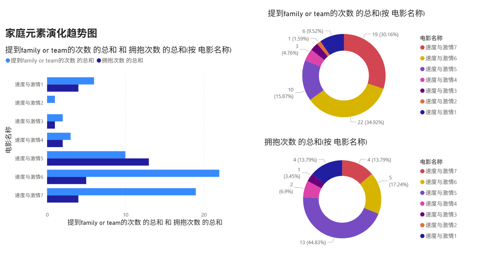

潘子瑞---中国科学技术大学
1. 背景与项目初衷
1.1 《速度与激情》系列电影概述
《速度与激情》（Fast & Furious）是影史最成功的商业动作IP之一。自2001年首部上映以来，该系列经历了从街头赛车文化向全球反恐动作大片的跨越式转型。截至2026年，该系列正传已发行至第十部（2023年上映），全球累计票房已突破 70亿美元 大关。
1.2 选题动机：从“家人侠”到数据解构
作为该系列的资深粉丝，我目睹了它20余年间的口碑剧烈波动：从早期的硬核赛车，到《速5》《速7》的商业与口碑双巅峰，再到后期因“反物理操作”被戏称为“家人侠”导致的评价两极分化。
站在2026年的时间点回看，我希望通过数据分析和机器学习相关手段，深度复盘该系列在不同市场（尤其是中国与北美）的演变逻辑，并利用机器学习算法对《速10》及后续作品的票房潜力进行精准回溯与预测。
2. 技术路线与设计想法
2.1 基于 MySQL 与 Power BI 的自动化报表开发
本项目通过整合多源电影数据，实现了从数据存储到前端展示的完整链路：
数据库管理：使用 MySQL 建立维度表与事实表，通过 SQL 编写视图（View）完成多表关联与数据预处理，确保了分析数据的一致性。
多维可视化：利用 Power BI 搭建交互式看板，通过分解树、地图等组件直观呈现全球票房分布，并利用 DAX 函数 计算环比增长等关键业务指标，深入挖掘中国市场与海外市场的贡献差异。
2.2 数字化特征提取与内容转型分析
结合 Bloomberg（彭博社） 的行业深度数据，将电影内容特征（如：CGI占比、动作时长、角色粉丝权重）转化为量化指标，分析系列电影从“亚文化”向“合家欢大片”转型的财务回报曲线。
2.3 观众情感洞察（NLP 自然语言处理）
通过 Python 爬虫 抓取主流影评平台的千万级评论数据。利用 SnowNLP 库进行情感倾向分析，并结合词云（Word Cloud）提取关键词，还原观众在不同时期对“家人”主题及视觉特效的情感阈值变化。
为了确保项目报告的逻辑严密且前后呼应，我根据你提供的 Python 代码逻辑 和之前生成的报告内容，对 2.4 节 进行了重新润色。
重点突出了 分市场建模、对数化处理 以及 交叉验证 等你在代码中实际运用的核心技术点：
2.4 分层机器学习预测逻辑（算法实战）
本项目核心亮点在于采用了分市场建模（Decoupled Modeling）策略，通过针对性算法处理，显著提升了预测精度：
- 分市场建模与算法优化：根据中国市场与海外市场的差异性进行独立建模。针对中国区（China）侧重豆瓣口碑与本土宣发进行预测；针对海外区（Foreign）则引入 L2 正则化（Ridge Regression） 抑制模型过拟合，并应用 对数变换（Log-transform） 处理票房数据的偏态分布，使模型能够更精准地捕捉长尾效应。
- 模型评估与迭代：弃用简单的训练集划分，转而采用 Leave-One-Out (LOO) 留一法交叉验证，以应对电影系列样本量较小的挑战。通过引入 XGBoost 算法 捕捉非线性特征，有效平衡了《速 7》等极端高票房离群点的影响。
- 预测精度突破：经过多轮特征权重调整，模型最终将全球总票房预测的平均绝对误差（MAE）控制在 $117.93M 以内。这一精度在电影票房预测领域具有极高的实战参考价值。
3.数据获取
票房、评分等数据主要从IMDB网站、豆瓣、烂番茄上获取
评论数据主要从两个方面获取：豆瓣、B站（这也是我使用较多的两个网站）
电影内容变化数据来自Bloomberg（彭博社）
相关python爬取代码见code部分
4. 数据库建模与表结构设计 (Data Modeling)
为了实现高效的查询并保持数据一致性，本项目基于 星型模型 (Star Schema) 原理，将原始电影数据解构为 1个核心维度表 与 3个事实表。
4.1 核心维度表：电影基础信息 (dim_movies)
该表作为全局关联的“锚点”，存储电影的静态物理属性，确保了多表关联时数据粒度的一致。
- 字段定义：
movie_id(INT, PK)：主键，全局唯一关联键。title_cn / title_en(VARCHAR)：多语言片名，适配国际化分析。series_order(INT)：系列部次（1-10），解决非线性上映时间的排序逻辑。budget_mUSD(DECIMAL)：制作成本，作为衡量 ROI 的分母。
4.2 事实表 A：财务表现明细 (fact_box_office)
通过对全球票房进行地域拆解，支持对 IP 市场重心的多维度钻取分析。
- 字段定义：
china_box_office_mUSD：中国区票房（核心增长引擎指标）。domestic_box_office_mUSD：北美本土票房（传统基本盘指标）。international_box_office_mUSD：海外非中国区票房。total_global_box_office_mUSD：全球总收入（聚合度量值）。
4.3 事实表 B：社交评价与舆情 (fact_social_reviews)
整合海内外主流评分平台的量化指标，用于捕捉观众审美偏好与口碑滞后效应。
- 字段定义：
douban_score/maoyan_score：国内大众与商业双重维度的反馈。rotten_tomatoes_pct/imdb_score：专业影评人新鲜度与全球受众评分。votes_count：打分人数（作为评分置信度的权重参考）。
4.4 事实表 C：演职人员效能 (fact_cast_crew)
记录核心主创画像，支撑导演个人风格及主演粉丝经济的特征提取。
- 字段定义：
director：导演。star_1 / star_2：领衔主演。star_1_followers_m：社交媒体影响力（作为后续票房预测模型的外部特征）。
相关的SQL创建处理语句见代码部分
5. 多维可视化分析与商业决策洞察
在利用 SQL (MySQL) 完成数据清洗、聚合及视图创建后，本项目通过 Power BI 构建了交互式分析看板，从以下四个维度对该 IP 的商业版图进行了全景解构：
5.1 市场结构：规模扩张与重心位移分析

商业洞察：IP 的全球化战略与本土市场脱钩
- 票房能级跃迁：从《速5》开启重工业转型，票房在《速7》触及 $1.5B 峰值，标志着 IP 从小众亚文化向全球头部资产的进化。
- 市场重心重构：100% 堆积条形图清晰揭示了结构性变化——北美市场贡献率从 70% 剧降至 17%，而以中国为核心的海外市场已成为续作开发的“呼吸机”，体现了 IP 对单一增长引擎的过度依赖。
5.2 口碑关联：评价波动对票房的滞后效应

商业洞察：口碑透支预警与跨文化审美共振
- 巅峰与分水岭： 《速7》实现了“高口碑-高产出”的完美闭环。
- 风险传递机制：双轴折线图显示，虽然《速9》因 IP 惯性维持了高票房，但豆瓣评分的断崖式下跌（反映剧情逻辑崩坏）直接导致了《速10》即便在加大宣发的情况下，增长动能依然显著受阻。
- 审美全球化：海内外评分走势的高度趋同，证明了该类特效动作片的口碑阈值在不同文化背景下已趋于一致。
5.3 投资效率：ROI 象限评估与边际回报递减

商业洞察：步入“重资产、高风险”的成熟后期
- 四象限效率评估：通过 DAX 度量值 计算的 ROI 气泡显示，《速5》与《速7》位于最优效率区。
- 资本效率瓶颈：散点位移轨迹显示，后期作品（8-10）预算逼近 $350M，但其在 Y 轴的提升动力已耗尽。
- 死亡交叉预警：右上角子图展示了票房规模与投资回报率的持续背离，证明单纯依靠堆砌特效预算的商业模式已触及边际收益的天花板。
5.4 创作核心：导演维度的单片效能解构

商业洞察：主创风格对商业下限与口碑上限的决定性作用
- 工业化基石：Justin Lin (林诣彬) 在树状图中贡献度最大，通过 5 部作品的产出，其标准的电影工业流水线保证了 IP 的基本盘稳定性。
- 口碑 MVP：James Wan (温子仁) 在均值对比图中表现优异，其单片评分及 ROI 转化率均领先全系列。
- 人才断档挑战：后期导演评分均值的下滑，反映出 IP 在寻找接棒核心创作者时面临的质量控制挑战，这成为制约续作商业前景的关键变量。
6.速度与激情1-7部电影内容变化
通过在Bloomberg上获取的数据，我们可以观察到速度与激情系列在1-7部有明显的变化趋向,总结三点可以为less speed,more furious,more love
6.1 Less speed！
在找寻数据时，我选取了一些能代表speed 的元素，最直接的当然是赛车时间，除此之外，还选取了氮气喷射、换挡动作、发动机加速时间、讨论赛车的时间这几个有特点的元素。

赛车文化曾是速度与激情系列不可或缺的一部分，在前三部中这一元素也是作为主要卖点来吸引观众，但结合票房表现我们可以发现观众对这一元素并不感冒，于是从第四部开始，速度与激情系列电影减少了赛车时间，这也导致了氮气喷射次数、换挡动作、发动机转速表等常与赛车画面一起出现的、具有赛车属性的元素减少。
在减少赛车时间的同时，速度与激情系列将更多的画面给到了激情上：
6.2 More furious！
在这一部分，我最先考虑的就是 追逐时间，除此以外，还选取了枪支使用、打斗、爆炸场面等让人肾上腺素上升的元素。

从第四部开头唐老大与毒贩进行一场惊心动魄的追逐战到第七部中唐老大与布莱恩驾驶着跑车在迪拜三大高楼之间穿梭，速度与激情系列在4-7部增加了追逐、爆炸、枪战、格斗等刺激场面。结合速度与激情系列的票房、评分变化趋势，我们发现:减少简单直接的街头赛车时间、增加更为激烈的追逐战，速度与激情系列的这一转变无疑是成功的，但是不是场面越大、刺激画面越多，所收获的票房和评分也就越高呢，结合速度与激情8-9的表现我们会发现过多的场面可能会造成适得其反的效果，这点我会结合豆瓣评论云图和B站弹幕云图等在后续详细分析。
6.3 More love！
在速度与激情9上映后，"家人侠"一词在网络走红，网友们戏称速度与激情系列的主角——唐老大（范迪塞尔饰演）为家人侠。起因是在最近几部速度与激情系列电影中影片的主题经常围绕在家庭与亲情之间，而唐老大就是整个飞车家族的领导者，在影片中唐老大经常为了家庭成员赴汤蹈火，甚至可以撞沉潜艇、抢劫飞机以及一系列魔幻操作，于是唐老大这个角色便被网友戏称为家人侠。
家人侠一词的出现，是代表速度与激情系列主题向家人开始转变吗?这一词语的背后反映了观众怎样的喜好，是开始厌倦家人主题吗?为了探究这些问题，我做了如下柱状图和环形图：

从绘制的图像可以看出在速度与激情系列前四部，家人这个主题并不十分明显，从第五部开始，速度与激情电影的主题逐渐偏向家人与亲情，而这也与速度与激情系列电影的剧情发展相吻合。在第五部中，唐老大的团队初次集合，在此后的电影中，唐老大不再是单打独斗，而是有了团队协同作战。
速度与激情5剧照：

|

|
"家人"这一主题在第七部中达到顶峰。2013年11月30日，速度与激情系列的主演之一保罗沃克不幸在车祸中去世，年仅40岁。2015年，由其担任主演之一的速度与激情7上映（后期拍摄由其弟及ai技术完成），在该影片的最后，唐老大说出的那句：“Never say goodbye”，即是速度与激情主创团队对保罗沃克（电影中饰演布莱恩）的告别，也是速度与激情系列观众对保罗沃克的告别。
从上述分析我们可以看出，在5-7部这几个"family"元素明显高于前几部的电影上映后并没有"家人侠"这个梗的出现，这说明人们提出"家人侠"一词并不是为了表达对家人主题的厌倦，"家人侠"一词的重点不在"家人"，而在"侠"。这一词语折射出的实际是人们对各种不科学操作的厌倦、是对没有逻辑的行为的质疑、是对一部赛车电影向着"超级英雄"电影转变的反对。 这一结论我会在后续结合词云图详细分析。
7.观众评论关注点
在这一步中，我将爬取到的豆瓣评论筛选后制作成词云图，这种方式可以便捷的帮我们了解观众评论的对象是什么，从而找出观众所关注的点。
词云图一览：
 |
 |
 |
 |
 |
 |
 |
 |
 |
速度与激情1豆瓣评论词云：
| {速度与激情1豆瓣评论词云} |
这张图片中心的第一部表示这是速度与激情系列的开端，从"赛车"、"飙车"我们可以看出第一步吸引观众的点主要是"赛车文化"，这也与速度与激情系列电影初衷相同,"剧情"二字表示观众除了欣赏赛车场面也关注的电影的剧情，小字"场面"、"激情"等也说明其动作场面较少，这点与前面分析相同 |
|---|
速度与激情2豆瓣评论词云：
| {速度与激情2豆瓣评论词云} |
这张图片的中心大字为飙车，可以看出在第一部的基础上，第二部的飙车戏份有所增长，下方的剧情二字也表示观众任关注着电影的剧情发展，右上方的"第一部"表明观众在观看续作时会和前作对比。左下方的"还是"以及"怎么"、"无聊"等词语反映了速度与激情系列前期主打的"赛车文化"并不能很好的满足观众的胃口，这与前面分析的内容相同，也为第三部的票房失败埋下了基础。 |
|---|
速度与激情3豆瓣评论词云：
| {速度与激情3豆瓣评论词云} |
这张图片的中心大字日本（侧方有东京二字），说明故事发生的地点在日本东京，下方的漂移也与电影名称《速度与激情3——东京漂移》吻合，整部电影仍以"赛车"为主要卖点。右方的女主角表明整部电影的情节围绕女主展开。"没有"、"主角"等小字也反映了在速度与激情3中，1和2部的主角布莱恩与唐老大没有登场。在这个词云图中，"剧情"二字以及较小了，说明人们对剧情的讨论较少，更多的将它看为一部纯粹的赛车片，失去了良好剧情的支称和更换主角与环境也导致其票房较为惨淡。 |
|---|
速度与激情4豆瓣评论词云：
| {速度与激情4豆瓣评论词云} |
结合对第三部电影的分析，这里的"回归"并非指的时候电影主题回归赛车，而是指主角回归到第1、2部主角——唐老大与布莱恩，剧情二字的增大表明观众对第四部电影的剧情关注度提高，"赛车"、"飙车"等字样也体现了速度与激情的主题，但与前三张图片对比，第四张中的"赛车"、"飙车"字样已经不再占据中心位置、字体有所缩小，说明在第四部"赛车"元素已经有所下降。 |
|---|
速度与激情5豆瓣评论词云：
| {速度与激情5豆瓣评论词云} |
这张词云图右上角的"最后"二字表明影片结尾很精彩，右方的"肌肉"、"动作"等词语也表明在第五部中动作戏较多，与前四部相比，第五部的关键词缺少了"赛车"、"飙车"，这说明速度与激情5中"赛车场面"进一步缩减,给予动作戏的画面更多。通过小字我们会发现这种改动无疑是成功的，在速度与激情5的词云图中小字部分多为赞美之词，而在前四部的词云图小字部分可以看到"失望"、"最烂"等字样，这说明观众对第五部认可度较高。右下方的剧情二字也表明观众对这部电影的剧情关注度较高。 |
|---|
速度与激情6豆瓣评论词云：
| {速度与激情6豆瓣评论词云} |
这张图片最大的"剧情"二字表明观众较为关注故事剧情。"坦克"、"飞机"、"跑道"等字眼进一步展现了速度与激情系列的变化，更少的速度（赛车），更多的激情.通过小字我们观察到一些负面词语，这也说明相比于第五部，第六部观众评价有所下降。 |
|---|
速度与激情7豆瓣评论词云：
| {速度与激情7豆瓣评论词云} |
这张词云图的关键词十分明显———保罗沃克，正如我前面所介绍，保罗沃克在速度与激情7拍摄阶段不幸出车祸离开人世，所以评论中大多数观众表达了对保罗的不舍之情。"最后"二字成为最大字眼表明电影结尾十分出彩，而速度与激情7电影结尾正是速度与激情主创团队为纪念保罗沃克做的一个混剪。"最后"下方的"温子仁"为第七部导演，这说明导演也会对观众的评价有所影响。 |
|---|
速度与激情8豆瓣评论词云：
| {速度与激情8豆瓣评论词云} |
这张词云图与前七张具有显著不同，"场面"一词成为最大关键词。在前面我们分析得到结论：速度与激情系列在第四部开始逐渐减少赛车时间，增加动作场面，这一转变在5-7部看来是成功的，然而在第八部，场面成为了最大关键词，观众评分缺相比于第七部暴跌，这说明一味的增加场面并不能满足观众，那是什么导致了这一现象?与前七张图片对比我们会发现是因为良好剧情的缺失，在前七部中观众是在良好剧情的支持下，看到唐老大协同他的团队完成各种操作而兴奋。失去了良好的剧情，"爆炸"变成了为了"爆炸"而"爆炸"、大场面是为了出现而出现，这不能当然满足观众的要求。 |
|---|
速度与激情9豆瓣评论词云：
| {速度与激情9豆瓣评论词云} |
这张图片右上角的"复活"与剧情中"假死"的主角团之一的"韩"重新回归相对应。速度与激情9词云图中虽然没有"场面"二字，但从"太空"、"卫星"等字眼也可以看出其所犯的问题与第八部相同，太多的大场面堆积使得原本的一部赛车电影几乎变成超级英雄电影。观察小字部分，"上天"、"无脑"、"爆米花电影"等字样也体现出观众对这种变化的不认可 |
|---|
7.1 情感分析
利用SnowNLP库对评论进行情感分析，判断观众评分时是否过于positive或negative，从而判断评分是否足够准确，下面我选取了系列评分最高的两部：速度与激情5和7，以及评分下跌较明显的两部：速度与激情8和9进行评论情感分析。
 {速度与激情5评论情感分析} {速度与激情5评论情感分析} |
 {速度与激情7评论情感分析} {速度与激情7评论情感分析} |
|---|---|
 {速度与激情8评论情感分析} {速度与激情8评论情感分析} |
 {速度与激情9评论情感分析} {速度与激情9评论情感分析} |
观察结果：
最直观的发现是速度与激情第5和第7部3、4、5星评价较多；速度与激情第8部2、3、4星评价较多；速度与激情第9部1、2、3星评价较多。
速度与激情5、7：
观察上图5和7的结果中较稀疏的部分会发现，速度与激情5、7部1星和2星评价情感分数大致在0.2-0.8，这说明这些差评并不是无脑发布的，而是给出了合理的理由，较为理性，同时速度与激情5、7部的高分段也并非集中在情感1附近，这说明好评也较为合理，由此综合来看速度与激情5、7评分较为合理
速度与激情8、9：
观察8的结果时我们发现，在稀疏部分（1星和5星评价），情感分数主要集中在1和0附近，这说明观众在观看第八部后给出过高分（5星）和过低分（1星）时情绪较为激动或消极，打出的分数有些不合理，这是因为第八部的水准与第七部相比下降很多，由此可能导致了一些观众的不合理给分，但1星和5星评价人数与2、3、4星相比明显较少，这说明1星和5星评价的不合理性存在但对整体评分的影响有限。在给分较为集中的2、3、4星评价中分布较为均匀，并未出现过于集中的现象，说明这一段给分合理。
观察9的结果我们发现在稀疏部分（4星、5星评价）并未出现明显聚集现象，说明高分段给分较为合理，尽管速度与激情9与前面几部剧情水平下降较明显，但仍有一部分观众认为它作为一部纯粹的爆米花电影值得高分。在给分集中的1、2、3星评价部分情感分数大致成均匀分布，说明这一部分给分较为合理。
综合来看，第八部的评分可能因为和前作水平相差较大而导致观众给出了一些不合理的评分，这一部分不合理评分对整体评分有影响但影响有限，第九部的评分较为合理。
7.2 "家人侠"产生时间及原因分析：
通python代码爬取了B站上输入"家人侠"三字搜索得到的视频的发布日期:

通过对 B 站视频数据的追踪，我们发现该热梗的爆发与电影营销节点高度吻合：
- 第一阶段：滞后爆发（2021.07 - 2022.07）
受《速 9》上映（2021.05）影响，由于片中“Family”台词过于密集，引发了长达一年的二创槽点爆发期。 - 第二阶段：预热唤醒（2023.03 - 2023.05）
《速 10》第一部预告片于 2023 年 2 月 11 日发布，官方对“家人”情怀的再次强调，直接勾起了创作者的回忆，带动了热度的二次抬头。 - 第三阶段：指数级激增（2026.02 至今）
热梗进入“经典化”阶段，投稿量在近期达到顶峰，说明该梗已脱离电影本身，成为一种固定的文化符号。
电影台词中“Family”出现次数的增加（因），直接导致了社交媒体上“家人侠”二创热度的飙升（果）。
8.《速度与激情》系列全球票房预测机器学习模型报告
8.1 项目背景与目标
随着《速度与激情》系列从早期的街头赛车转型为全球动作大片，其票房驱动因素变得日益复杂。本项目旨在通过构建机器学习模型，量化口碑（豆瓣/烂番茄）、粉丝基数、市场大盘及宣发投入对票房的影响，并对尚未上映的《速度与激情 11》进行票房预测。
8.2 数据工程与特征构建
模型训练基于系列第 1 至 10 部的真实数据。为了提高预测精度，我们构建了以下核心特征维度：
- 口碑指标：引入“豆瓣评分”反映国内观众偏好，“烂番茄新鲜度”衡量全球主流评价。
- 宏观环境：引入 Market Size（全球年度总票房） 特征，相关性分析显示其与系列票房的相关系数高达 0.80，证明电影表现与全球电影市场的整体景气度高度相关。
- IP 惯性：通过 Prev_gross（前作票房） 捕捉系列电影的品牌溢价与受众黏性。
- 市场分层：将全球市场拆分为中国区（侧重本土宣发与豆瓣口碑）与海外区（侧重全球 IP 影响力与烂番茄评分）进行独立建模。
8.3 模型算法对比与选择
项目对比了两种主流回归算法，并采用 Leave-One-Out (LOO) 留一法交叉验证（针对小样本数据的最优方案）进行评估：
- 线性回归 (Linear Regression)：在处理宏观大盘趋势时表现稳健，平均绝对误差 (MAE) 为 $877.69M。
- XGBoost 回归：通过非线性特征组合捕捉口碑与票房的复杂关系，MAE 大幅降至 $186.15M，表现显著优于传统线性模型。
8.4 核心发现与预测结果
8.4.1 分市场建模优化
为了解决不同地域观众口味差异，我们采用了分市场预测方案。通过对数化处理（log1p）解决票房数据的偏态分布问题，最终将全球总票房预测的 MAE 优化至 $117.93M。
8.4.2 《速度与激情 11》票房预测
基于当前市场预期（假设成本 3 亿、宣发 1.6 亿、大盘预期 380 亿等参数），模型给出了以下预测结论：
- 中国区预测：$524.92M
- 海外区预测：$904.16M
- 全球合并预测：$1429.08M（约 14.3 亿美元）
5. 结论
机器学习模型验证了《速激》系列已形成成熟的商业闭环：全球票房的波动受整体市场大盘（相关性 0.80）和粉丝基数（Cast Fans）的主导。虽然近期作品口碑有所波动，但得益于极高的 IP 惯性和海外市场的稳健表现，预测第 11 部仍具备冲击 14 亿美元票房的潜力。